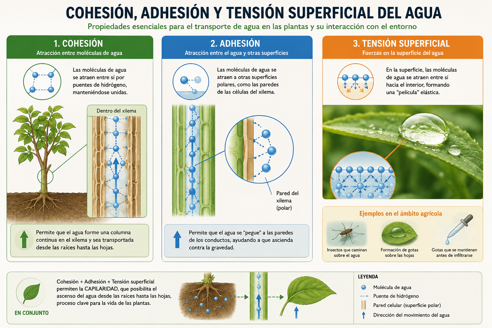
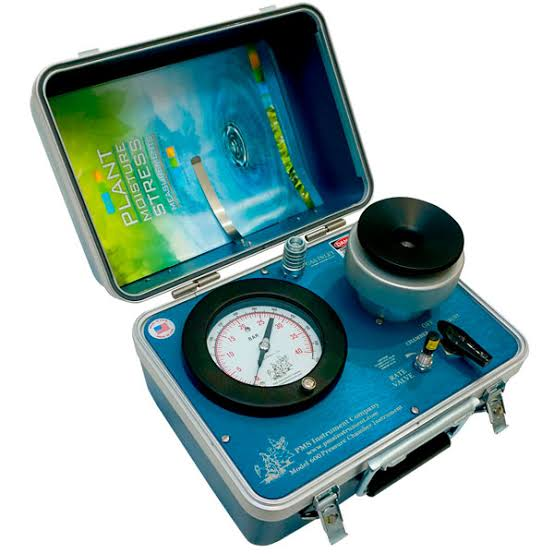
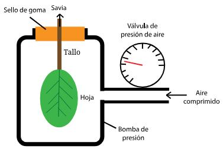

Unidad 3 — El agua en la planta
Sesión 3.2: Sistema conductor xilemático y transporte de agua
Recapitulación sesión anterior
Sesión 3.1 — Ideas fuerza:
- El agua entra a la raíz por ósmosis (de mayor a menor \(\Psi\))
- Los pelos radicales multiplican la superficie de absorción
- La banda de Caspary hace la absorción selectiva
- Apoplasto, simplasto y transcelular son las tres vías
Ahora: el agua ya entró a la raíz. ¿Cómo sube hasta la hoja, decenas de metros contra la gravedad?
Información de la sesión
| Unidad | 3 — El agua en la planta |
| Sesión | 3.2 |
| RAA | RAA5 |
| Duración | ~90 minutos |
| Contenido | Estructura del xilema, teoría de cohesión-tensión, potencial hídrico y sus componentes, medición del estado hídrico |
Objetivos de aprendizaje
Al finalizar esta sesión, serás capaz de:
- Describir la estructura del xilema: traqueidas y elementos de vaso
- Explicar la teoría de cohesión-tensión (Dixon-Joly) para el ascenso de la savia
- Descomponer el potencial hídrico en sus componentes (\(\Psi_m\), \(\Psi_o\), \(\Psi_g\), \(\Psi_p\))
- Interpretar el gradiente de potencial hídrico suelo → planta → atmósfera
- Identificar los métodos de medición del estado hídrico (Scholander, psicrómetro, porómetro)
El problema: subir agua contra la gravedad
Una secuoya puede superar los 100 m de altura. ¿Cómo llega el agua a la copa?
| Método de “bombeo” | ¿Puede explicar 100 m? |
|---|---|
| Capilaridad (tubos finos) | No — máximo ~1-2 m en el xilema |
| Presión de raíz (ósmosis) | No — máximo ~0.1-0.2 MPa (≈ 10-20 m, y solo de noche) |
| Succión por transpiración | Sí — la tensión generada en la hoja “tira” de la columna |
El agua no es “empujada” desde abajo, sino “tirada” desde arriba por la transpiración.
Estructura del xilema
El xilema es el tejido conductor del agua (y nutrientes minerales), formado por células muertas lignificadas:
| Tipo celular | Descripción | Eficiencia | Grupo de plantas |
|---|---|---|---|
| Traqueidas | Células alargadas con puntuaciones (pits) laterales | Menor | Gimnospermas (pinos) |
| Elementos de vaso | Células cortas y anchas, sin paredes en los extremos → forman vasos continuos | Mayor | Angiospermas |
Los vasos (tubos abiertos) conducen más rápido que las traqueidas. Por eso las angiospermas suelen tener mayor conductividad hidráulica.
El xilema como tubo continuo
Las células del xilema forman tubos capilares continuos desde la raíz hasta la hoja:
- Columnas de agua de decenas de metros de longitud
- Diámetro de vasos: 20 - 200 μm (traqueidas: 10 - 50 μm)
- Paredes reforzadas con lignina para soportar presiones negativas (tensión)
La savia bruta (agua + minerales) sube por un sistema de tubos finos, rígidos y continuos.
Potencial hídrico y sus componentes
Recordemos de la Unidad 1:
\[ \Psi_{total} = \Psi_m + \Psi_o + \Psi_g + \Psi_p \]
| Componente | Nombre | Origen | ¿Dónde importa más? |
|---|---|---|---|
| \(\Psi_m\) | Matricial | Adsorción y capilaridad | Suelo, paredes celulares |
| \(\Psi_o\) | Osmótico | Solutos disueltos (siempre ≤ 0) | Células, savia |
| \(\Psi_g\) | Gravitacional | Altura (\(\rho g h\)) | Tallos altos |
| \(\Psi_p\) | De presión / turgencia | Presión hidrostática | Células vivas |
¿Qué componente domina en cada parte?
| Compartimento | Componente dominante | Signo y magnitud típica |
|---|---|---|
| Suelo no saturado | \(\Psi_m\) | Negativo (-0.01 a -1.5 MPa) |
| Células de la raíz | \(\Psi_o\) + \(\Psi_p\) | Turgencia positiva (0.3-0.5 MPa) |
| Xilema | \(\Psi_g\) + tensión (\(-\Psi_p\)) | Negativo (-0.5 a -1.0 MPa) |
| Hoja (mesófilo) | \(\Psi_o\) | Muy negativo en estrés (-1 a -3 MPa) |
| Atmósfera | \(\Psi_o\) (vapor) | Muy negativo (-50 a -100 MPa) |
En el xilema el agua está bajo tensión (presión negativa), lo que distingue a la savia de un líquido en reposo.
La teoría de cohesión-tensión (Dixon-Joly)
Propuesta por Dixon y Joly (1894). El ascenso de la savia se explica por tres fuerzas encadenadas:
- Tensión (succión): la transpiración evapora agua de la hoja → genera una presión negativa en la superficie de las células del mesófilo.
- Cohesión: los puentes de hidrógeno mantienen unidas las moléculas de agua → la tensión se transmite a lo largo de toda la columna.
- Adhesión: el agua se adhiere a las paredes del xilema (capilaridad) → la columna no se separa de las paredes.
La hoja “tira”, la columna de agua resiste por cohesión, y la adhesión la mantiene pegada al tubo.
La teoría de cohesión-tensión

Cohesión y adhesión en detalle
| Propiedad | Mecanismo | Magnitud |
|---|---|---|
| Cohesión | Puentes de hidrógeno entre moléculas de H₂O | Soporta tensiones teóricas de -20 a -30 MPa |
| Adhesión | Atracción del agua a las paredes de celulosa/lignina | Mantiene la columna pegada a los vasos |
La clave: la columna de agua en el xilema es metastable — permanece intacta bajo tensión mientras no entren burbujas de aire.
Estas mismas propiedades (polaridad de la molécula de agua) ya las vimos en la Unidad 1.
El flujo como una “ley de Ohm” vegetal
El flujo de agua en la planta se modela igual que la corriente eléctrica:
\[ \text{Flujo} = \frac{\Delta \Psi}{R} \]
donde \(R\) es la resistencia hidráulica del trayecto.
| Magnitud | Eléctrica | Vegetal |
|---|---|---|
| Fuerza motriz | Voltaje (\(V\)) | Diferencia de potencial (\(\Delta\Psi\)) |
| Resistencia | Resistencia (\(\Omega\)) | Resistencia hidráulica (\(R\)) |
| Flujo | Corriente (\(I\)) | Flujo de agua (\(J\)) |
A mayor gradiente (\(\Delta\Psi\)) o menor resistencia, mayor flujo de agua.
La analogía de la ley de Ohm

El gradiente de potencial en el SPAC
Valores típicos de \(\Psi\) (MPa) a lo largo del continuo:
| Compartimento | \(\Psi\) (MPa) |
|---|---|
| Suelo | -0.01 a -0.05 |
| Raíz | -0.2 a -0.5 |
| Xilema (tallo) | -0.5 a -1.0 |
| Hoja | -0.5 a -1.5 |
| Atmósfera | -50 a -100 |
El mayor salto (y la mayor resistencia) está en la interfaz hoja → atmósfera, controlada por los estomas.
Ejercicio: lee el gradiente
Problema: Se miden los siguientes potenciales: suelo \(-0.05\) MPa, raíz \(-0.3\) MPa, xilema \(-0.8\) MPa, hoja \(-1.5\) MPa, atmósfera \(-80\) MPa.
- Calcula la caída de potencial en cada tramo.
- ¿Dónde está la mayor resistencia al flujo de agua?
- ¿Qué estructura regula esa resistencia?
Resuelve en 4 minutos.
¿Qué pasa si la tensión es demasiada?
Si el suelo está muy seco y la atmósfera muy demandante, la tensión puede superar lo que la columna soporta:
- Cavitación: se forman burbujas de vapor dentro del vaso
- Embolismo: la burbuja bloquea el vaso (queda lleno de aire)
- El vaso embolizado deja de conducir agua
Consecuencia: la planta pierde conductividad hidráulica → puede llegar a la marchitez irreversible.
Riesgo alto con: sequía severa, congelamiento, o daño mecánico. Los estomas se cierran para evitar cavitación (lo veremos en 3.3).
Medición del estado hídrico: ¿por qué?
Conocer el estado hídrico de la planta permite decidir cuándo regar con base en la planta misma, no solo en el suelo.
| Método | ¿Qué mide? | Principio |
|---|---|---|
| Cámara de presión (Scholander) | \(\Psi_{hoja}\) | Presión de gas para expulsar savia del pecíolo |
| Psicrómetro | \(\Psi\) (suelo o tejido) | Humedad relativa del aire en equilibrio |
| Porómetro | Conductancia estomática (\(g_s\)) | Flujo de vapor a través de los estomas |
Cámara de presión de Scholander
El método más usado en frutales y viñas (manejo del riego):
- Se corta una hoja y se sella en la cámara dejando el pecíolo afuera
- Se aumenta la presión de gas hasta que la savia aparece en el corte
- La presión aplicada = \(-\Psi_{hoja}\) (presión de equilibrio)
| Lectura \(\Psi_{hoja}\) (MPa) | Interpretación (ej. vid) |
|---|---|
| > -0.8 | Sin estrés |
| -0.8 a -1.2 | Estrés leve |
| < -1.2 | Estrés — considerar regar |
Se mide al mediodía (máximo estrés diario) o pre-amanecer (potencial de base).
Camara de presión Scholander


Psicrómetro y porómetro
| Método | ¿Qué mide? | Ventaja | Limitación |
|---|---|---|---|
| Psicrómetro | \(\Psi\) por humedad relativa | Mide suelo y tejido, in situ | Lento, sensible a T |
| Porómetro | Conductancia estomática (\(g_s\)) | Rápido, no destructivo | Solo la hoja, varía en el día |
Porómetro: mide la difusión de vapor por los estomas. Si \(g_s\) está baja al mediodía con buena luz, la planta está cerrando estomas → probable estrés hídrico.
En la Unidad 6 volveremos a estos sensores dentro de la telemetría y el monitoreo continuo.
Ejercicio: interpreta una medición
Problema: En una viña se mide \(\Psi_{hoja}\) al mediodía durante una semana:
| Día | \(\Psi_{hoja}\) (MPa) |
|---|---|
| Lunes | -0.7 |
| Miércoles | -0.9 |
| Viernes | -1.4 |
- ¿Cómo evoluciona el estado hídrico de la planta?
- ¿Qué decisión de manejo tomarías el viernes?
- ¿Qué esperarías que ocurra con la conductancia estomática (\(g_s\)) el viernes?
Resuelve en 3 minutos.
Vocabulario clave
| Término | Definición |
|---|---|
| Xilema | Tejido conductor de agua y minerales (células muertas lignificadas) |
| Traqueida | Célula conductora alargada con puntuaciones (gimnospermas) |
| Elemento de vaso | Célula ancha que forma tubos continuos (angiospermas) |
| Cohesión | Atracción entre moléculas de agua (puentes de H) |
| Adhesión | Atracción del agua a las paredes del xilema |
| Tensión | Presión negativa en la savia generada por la transpiración |
| Cavitación / embolismo | Formación de burbujas que bloquean un vaso |
| Cámara de Scholander | Instrumento para medir el potencial hídrico foliar |
Resumen de conceptos clave
El agua sube contra la gravedad tirada por la transpiración, no empujada desde abajo
El xilema conduce: traqueidas (menos eficientes) y elementos de vaso (más eficientes)
El potencial hídrico se descompone en \(\Psi = \Psi_m + \Psi_o + \Psi_g + \Psi_p\)
La teoría de cohesión-tensión (Dixon-Joly): tensión + cohesión + adhesión
El flujo sigue una “ley de Ohm”: \(\text{Flujo} = \Delta\Psi / R\)
El mayor salto de potencial (y mayor resistencia) está en hoja → atmósfera
La tensión excesiva causa cavitación; se mide el estado hídrico con Scholander, psicrómetro o porómetro
Para la próxima sesión
Sesión 3.3: Transpiración, fotosíntesis y control estomático
→ El último tramo del SPAC: de la hoja a la atmósfera.
→ Conductancia estomática (\(g_s\)) y su regulación.
→ El trade-off: abrir estomas para fotosintetizar vs. perder agua.
→ Eficiencia de uso de agua (WUE) y factores ambientales.
Preguntas de autoevaluación
Describa la teoría de cohesión-tensión. ¿Qué papel juega la transpiración?
¿Por qué los elementos de vaso conducen más eficientemente que las traqueidas?
Escriba la ecuación del potencial hídrico e identifique el componente dominante en: suelo seco, célula turgente y atmósfera.
Un árbol de 50 m: ¿qué componente del \(\Psi\) se vuelve relevante y por qué?
Calcule la caída de potencial entre la hoja (\(-1.5\) MPa) y la atmósfera (\(-80\) MPa). ¿Qué implica ese valor para el manejo del riego?
¿Qué es la cavitación y qué condiciones la favorecen?
¿Cuándo usaría una cámara de Scholander en vez de un sensor de humedad de suelo?
TAG2027 — Relación Suelo Agua Planta | UDLA